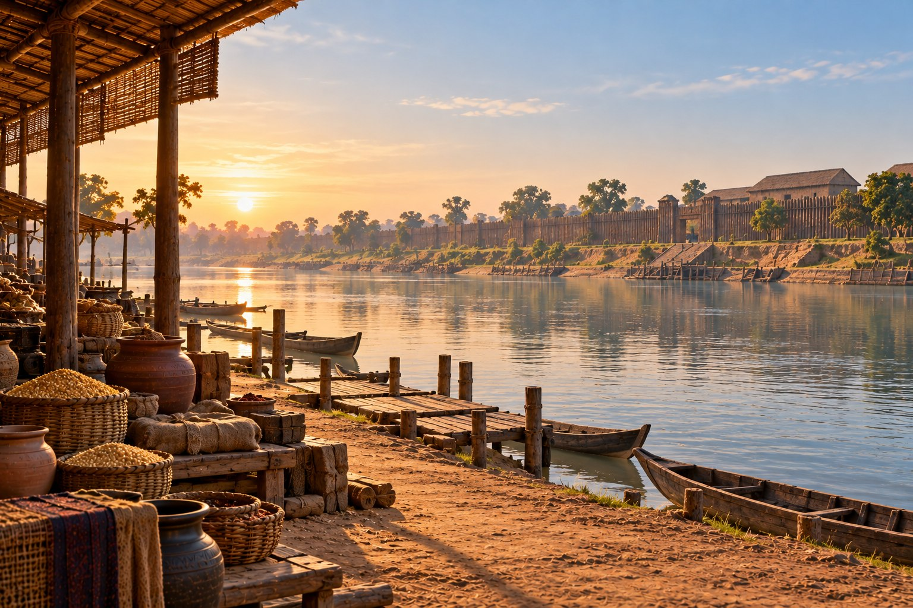

300 BCE — Pataliputra
Mauryan India · An interpretive riverside scene · Sunrise

Behind the Investigation:
Research Note
Behind the Investigation explains the generative AI capabilities, technologies, and design decisions demonstrated by each Institute investigation.
Prompt Method Used
Grounded historical prompting: establish a documented Mauryan-period riverine city and timber defensive tradition, then exclude architectural details whose specific forms cannot be substantiated. Three visual revisions reduced speculative structures.
Primary Capability
Historical Synthesis and Visual Storytelling. Integrating archaeological evidence, historical descriptions, visual uncertainty, and accessible interactive interpretation.
Research Question
Can a visually engaging reconstruction of Pataliputra around 300 BCE distinguish established features from conjectural scene-setting?
How It Works
Six unobtrusive circular markers open contextual notes about the timber fortification, river setting, ceramics, landing, boats, and market shelter. The interface also provides historical context and a source register. CSS provides minimal dawn haze and river shimmer.
Technical Implementation
The illustration was produced with generative AI; the interface was AI-assisted in development. All visitor interactions use deterministic HTML, CSS, and JavaScript. No live LLM generates responses at runtime.
Evidence and Limitations
Archaeological evidence supports major timber defenses at Pataliputra; historical descriptions support the city's riverine context. The precise shape of boats, landing platforms, market shelter, pottery assortment, rooflines, gate, and scene arrangement cannot be authenticated from the cited material. They remain interpretive and must not be presented as excavated reconstructions.
Representation Audit
No people are depicted. The scene avoids stone quays, sails, and elaborate palace towers removed during review. It is an atmospheric educational interpretation, not an exact reconstruction or a complete representation of Mauryan society.